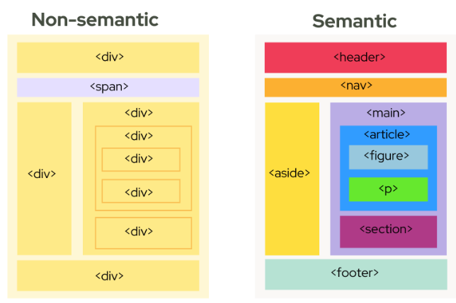

#Page 1 - Basic HTML
Pengertian HTML
HTML adalah sebuah bahasa pemrograman dasar untuk sebuah web development, berkepanjangan "Hypertext markup language". Html berfungsi sebagai sebuah bahasa yang mengawali atau membentuk suatu struktur web dan diikuti atau disempurnakan oleh bahasa lainnya seperti CSS atau javascript
#Page 2 - Semantic HTML
adalah sebuah format atau aturan penulisan tag html yang mudah dikenali oleh manusia maupun mesin dan mempunyai makna pada setiap tagnya, sehingga website kita mudah diedit atau dibaca dalam segi editing dan mudah terbaca mesin pencari web (web browser).
Semantic HTML juga bagus dalam SEO (Search Engine Optimization) dimana mesin pencari dengan mudah memahami struktur web dan menyediakan kepada para pengguna internet secara relevan apa yang mereka cari, bisa juga diartikan kalau semantic HTML itu Search Engine Friendly. Search engine juga akan memprioritaskan Website yang menggunakan Semantic HTML daripada website yang tidak menggunakannya
Contoh stuktur html semantic :

Contoh tag html semantic
| Tag |
Fungsi |
header |
Tag Semantic html yang berfungsi mendefinisikan bagian Header / kepala pada halaman web |
nav |
mendefinisikan sebuah bagian navigasi pada website |
main |
mendefinisikan konten utama pada sebuah website |
article |
mendefinisikan konten independet pada sebuah web dan tidak terkait oleh konten lainnya ( dapat berdiri sendiri ) |
section |
Tag semantic html yang berfungsi untuk mengelompokan konten yang terkait pada sebuah halaman |
aside |
digunakan untuk konten yang sedikit terkait pada konten lainnya, contoh : sidebar / iklan |
footer |
mendefinisikan sebuah bagian footer/kaki dari sebuah website |
| selengkapnya mungkin bisa dilihat di W3Schools |
#Page 3 - HTML image
tag image pada HTML yaitu tag yang memungkinkan kita para developer web untuk menyisipkan sebuah gambar salah satu tag dasar pada html dan disempurnakan melalui HTML5 yang lebih memperhatikan multimedia
Contoh 1
menyisipkan image dengan ukuran default sesuai ukuran gambar
Contoh 2
atur ukuran gambar dengan atribute pada tag image, salah satu atribute pada tag image adalah width & height
ini adalah ukuran gambar dengan atribut width="300px"
width untuk mengatur lebar gambar, dan height untuk mengatur tinggi gambar.
Pemakaian width dan height tidak harus bersamaan, kita bisa menggunakan salah satu dari mereka dan salah satu lainnya akan otomatis menyesuaikan perbandingan antara height : width dengan ratio asli gambar.
Namun jika kita menggunakan width dan height secara bersamaan dan perbandingan ukuran width:height yang kita buat tidak sesuai dengan ratio asli gambar maka yang terjadi gambar akan mengalami strech/perubahan ukuran yang tidak proporsional seperti ini :
Contoh 3 - Gambar yang strech/unproporsional karena ratio width & height tidak sesuai ratio asli gambar